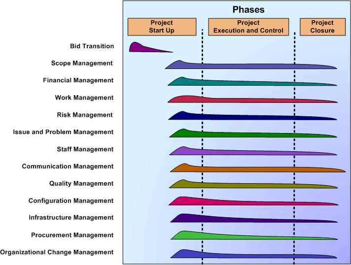
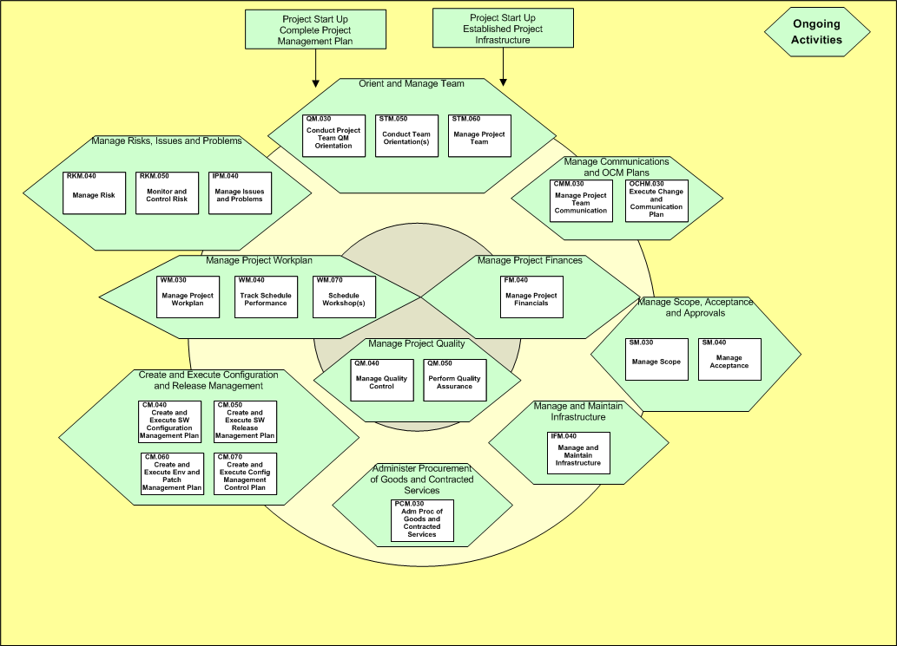

OUM |
Phase Overview |
||
Method Navigation |
Current Page Navigation |
||
|
|
||||||||
The purpose of the Project Execution and Control Phase is to provide adequate visibility into actual progress so that management can take effective actions when the project's performance deviates significantly from the project plans.
The Project Execution and Control Phase includes tracking and reviewing the projects accomplishments and results against documented WBS-dictionary, project estimates, time schedule, resources plan and cost budget, and adjusting these plans based on the actual accomplishment and results.
To be able to perform this phase, the following must be in place:
The following is a list of the objectives of this phase:
The Manage focus area context diagram illustrates the processes within the Project Execution and Control phase.

Best practice suggests the key Project Execution and Control tasks should be shown on the Project Workplan. While these tasks are generally short in duration, many will recur during each phase of the execution method, e.g., OUM, AIM, Compass.
The level of granularity of the Project Execution and Control tasks shown on the Gantt chart cannot be prescribed. This depends on many factors. Factors may include the role of consulting during project execution and the size and complexity of the project.
This section discusses techniques that may be helpful in conducting Project Execution and Control phase.
Tasks are managed in this process to control the direction of the project and maintain a solid partnership with the implementing organization and the business. The key techniques you employ during Project Execution and Control phase are leadership, communication, motivation, conflict management, analysis, and risk/issue resolution.
One of the most critical activities during Project Execution and Control phase is monitoring and reporting. If properly employed, the regular progress reporting and review cycles can provide a solid forum from which you can stay in control of project work. You will receive and create a wealth of qualitative and quantitative information in these reviews to help you and your project leaders find issues/risks and fix them before they become uncontrollable.
Attention: The following are suggested management reviews for your project. Make sure that you distinguish between these and project technical reviews, such as design reviews, by controlling the attendance, contributions, and agenda of the meetings. For example, a progress review attended by many users can turn into a design review if not controlled.
Note: Never be pressured into changing estimates or direction during a review meeting. Take time away from the meeting environment to make a decision.
The success of your project depends on a good level of communication within your project team. You must facilitate and encourage good communication by constant concern and effort. No amount of formal review can substitute for spending time informally chatting with your project members, and walking around your project work area. You will gain invaluable information about individuals, their work, and rate of progress. You will also be able to pick up on personal or political problems that can impede or are already affecting project work.
Suggestion: The qualitative information you gain, along with your own experience, should be used to corroborate the quantitative information in your project reviews. You need to feel satisfied that the figures are telling you the same thing as your impressions when you present your own progress reports.
The Work Management Control and Financial Management Control activities are usually synchronized with the status monitoring and reporting activities but they can have different structures. Project Execution and Control phase techniques you employ in Work Management will be a combination of those used during planning, plus performance measurement and variance analysis.
Project manager or an assigned resource control the work progress against the workplan for the phase by iterating through a regular tracking cycle which results in a comparison of actual progress to workplan. You follow up by directing replanning to adjust the workplan to reality where necessary, and by assigning corrective actions to bring future performance in conformance with the Workplan.
Warning: Watch for the following pitfalls when performing Workplan Control:
Good workplan control begins with a workplan against which project members can accurately charge their time at the task level. Each project member should submit a time record, either in the planning tool or on a separate worksheet, once each week. The total hours recorded against the project should add up to the number of hours charged to the project in the project accounting system.
Suggestion: Encourage project members to keep an ongoing record during the week of how they spent their time, rather than waiting until the day the time record is due.
Earned value analysis is a technique which is commonly used to add objectivity to financial performance measurement. Earned value method can be used with only hours, days etc. When you use earned value analysis, your project budget, actuals, and estimates-to-complete are tied closely to project work products giving you a more realistic view of project work. Earned value analysis involves calculating the value of a work product at a particular point in time, based on the budget and rules that define when the value of a work product is earned. You use the earned value, budget, actuals, and estimates-to-complete to provide indicators of whether or not work is being accomplished as planned.
During the Project Execution and Control phase, you manage the staff and infrastructure you have already put in place to ensure that your project can efficiently accomplish the assigned tasks. The techniques you will use most frequently during Staff Management deal with your project staff. In addition to the planning techniques you use to adjust your project organization, you will need to apply performance management, team building, motivation, leadership, and conflict management skills.
Repeat the exercise of going through your workplan to check which physical resources will be needed at frequent intervals. As you progress through the phase, you learn more about it, and better identify your critical resource needs. Keep careful watch over tasks that depend on a resource supplied by the business or a vendor in order to begin. Put these tasks and milestones on your Workplan to help you monitor them with the customer project manager. Act decisively if a project member cites the lack of a physical resource as the reason for not completing a task on time.
Suggestion: Identify the person responsible for the resource and hold them to their commitment. Ensure that the person actually understands the need and is willing and able to provide you with the goods and services you expect. Be prepared to encounter dramatic examples of bureaucracy. It can require skillful negotiating and tenacity to acquire or control things over which you may have no direct authority.
As the project manager, the way you utilize your staff will have a profound impact on your project, as well as influencing their professional development. There is a substantial and dynamic body of knowledge on building, motivating, and leading project teams. Keeping current on these techniques should be a key focus area of your own professional development.
Suggestion: Do not forget yourself and your project management staff when you plan training for your project. Schedule management training or directed team building sessions using current training offerings available to you, either internally or commercially.
Document the roles and responsibilities of your team members to clarify goals. If possible, integrate these assignment terms of reference with your organization’s performance management system. When you institute regular reviews of your staff’s performance, you can focus your team on project goals and also provide valuable feedback to them and the consulting practice.
The Project Orientation Guide has been developed to communicate the basic project information to the project team. Update and redistribute it to team members as the requirements change to maintain consistent performance throughout the project.
Quality Management tasks during the Project Execution and Control phase should be carefully coordinated with execution tasks. Product quality assurance techniques should include walkthroughs, inspections, technical reviews, and work product reviews. Process quality assurance techniques you will use include auditing, healthchecks, measurement, and analysis.
Follow the quality assurance process and quality control guidelines documented in the Quality Plan.
Integrate quality measurement into every task in some way. Schedule quality reviews to provide visibility and focus management attention on your phase’s key work products.
Warning: Follow the Project Management Plan on all levels, and do not compromise, even if the project is on a tight schedule. Once you begin to cut corners on delivering quality, you will ultimately absorb the consequences. Avoid making these types of compromises. It is important that the level of quality measures on the project be appropriate and accounted for in the Project Management Plan.
Every quality measure should be able to communicate a message back, whether the message is positive or negative. In any case, the feedback should be constructive and informative. The recipients of the feedback should never feel like they are being policed by some governing body. Also, your feedback should never be just an identification of problems. It should always include examples, approaches, and techniques for improving the process, as implemented by the project. A Quality Plan is only effective if you can take the results and improve the process directly on your project. If you merely measure results, then you have missed the whole point of instituting quality measures.
During Phase Execution and Control and throughout the project, use Configuration Management tasks to protect the integrity and content of your previous phase baselines and current phase work products. Configuration Management is a project management process, because it implements policies you establish to safeguard your work products. On an information technology project, software often represents a large portion of the value your project delivers. Software configuration management (SCM) is especially important to project managers, because it provides visibility and organization to highly intellectual, intangible software work products.
SCM controls are meant to protect much more than damage to work products. Software configuration control includes implementing the appropriate software change, but also making sure to update any previous or existing work product affected by the change. For example, analysis and design specs/documents must be updated to reflect changes implemented "downstream". SCM includes managing change and enforcing consistency.
Suggestion: Try to make the SCM system on your project a natural extension of your software development or implementation environment. By doing this, you can enforce SCM standards while at the same time fostering teamwork, confidence, and security.
Cleansing of sensitive, proprietary, or confidential information from project work products may require significant effort if the work products are to retain the value of cumulative project experience. It is important to include an adequate amount of effort in the project workplan to support the effort of identifying what, if anything, should be edited for a larger viewing audience. As the inventory of reusable components grows, the business will benefit from the reduced effort in the earlier phases of the project since previous knowledge and work products will be available to offset the cleansing effort. Refer to the contractual requirements prior to scheduling Knowledge Management. Schedule a knowledge review at the end of each major milestone or phase to facilitate work product preparation.
Attention: Scheduling and conducting a knowledge review helps the project manager facilitate gathering reusable work products and helps ensure that they are properly cataloged. Knowledge reviews also allow the project team to become aware of other similar projects and the potential use of intellectual capital from those projects.
Most projects are divided into multiple units of work resulting in a key milestone. Project phases and project iterations are common examples of how we divide project tasks during Project Execution and Control.
At the beginning of each iteration or phase, the Project Workplan should be revisited and updated as appropriate.
All the tasks in the Project Execution and Control phase are conducted when controlling an iteration/phase. There is no distinction between executing and controlling the project and executing and controlling an iteration/phase.
At the end of an iteration/phase, the following key Project Execution and Control phase tasks should be conducted.
Other Project Execution and Control tasks may be performed as necessary.
If you are using a Scrum approach, use the Managing an OUM Project using Scrum technique. Use this link to access the phase-specific guidance for Scrum.
This phase includes the following tasks:
| ID | Task | Work Product | Key |
Type |
|---|---|---|---|---|
Manage Scope, Acceptance and Approvals |
||||
SM.030 |
Managed Scope |
Y |
Core |
|
SM.040 |
Managed Acceptance |
Y |
Core |
|
Manage Project Finances |
||||
FM.040 |
Managed Project Finances |
Y |
Core |
|
Manage Project Workplan |
||||
WM.030 |
Project Workplan |
Y |
Core |
|
WM.040 |
Schedule Performance |
Core |
||
WM.070 |
Workshop Schedule |
Opt |
||
Manage Risk, Issues and Problems |
||||
RKM.040 |
Managed Risk |
Y |
Core |
|
RKM.050 |
Assessed Risk |
Core |
||
IPM.040 |
Managed Issue and Problems |
Y |
Core |
|
Orient and Manage Team |
||||
QM.030 |
Project Team Quality Management Orientation |
Core |
||
STM.050 |
Oriented Team |
Y |
Core |
|
STM.060 |
Managed Project Team |
Y |
Core |
|
Manage Communications and OCM Plans |
||||
CMM.030 |
Project Team Communication |
Y |
Core |
|
OCHM.030 |
Executed Change and Communication Plan |
Y |
Core |
|
Manage Project Quality |
||||
QM.040 |
Quality Control |
Y |
Core |
|
QM.050 |
Managed Quality Assurance |
Y |
Core |
|
Create and Execute Configuration and Release Management |
||||
CM.040 |
Create and Execute Software Configuration Management Plan | Software Configuration Management Plan | Y |
Core |
CM.050 |
Create and Execute Software Release Management Plan | Software Release Management Plan | Y |
Core |
CM.060 |
Create and Execute Environment and Patch Management Plan | Environment and Patch Management Plan | Y |
Core |
CM.070 |
Create and Execute Configuration Control Plan | Configuration Control Plan | Y |
Core |
Manage and Maintain Infrastructure |
||||
IFM.040 |
Manage and Maintain Infrastructure | Maintained Infrastructure | Y |
Core |
Manage and Maintain Infrastructure |
||||
PCM.030 |
Administer Procurement of Goods and Contracted Services | Managed Procurement of Goods and Services | Y |
Core |
The Project Execution and Control phase is made up of ongoing tasks. In general, ongoing tasks are conducted as needed and not dependent on other tasks in the workplan.
Some tasks, such as reporting tasks, are performed based on a predetermined schedule. This schedule is normally determined and agreed on during the Project Start Up phase. Tasks that are expected to occur at specific time (i.e., the first Friday of every month), should be added to the project plan.

These factors have been shown to be critical to the success of this phase:
At the end of this phase, the following criteria should be met or exceeded

Copyright © 2006, 2016, Oracle and/or its affiliates. All rights reserved.